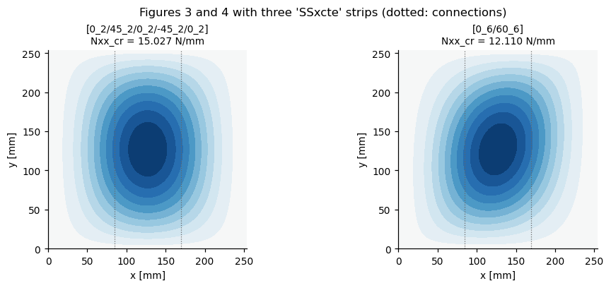
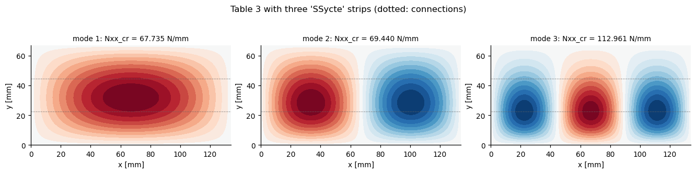
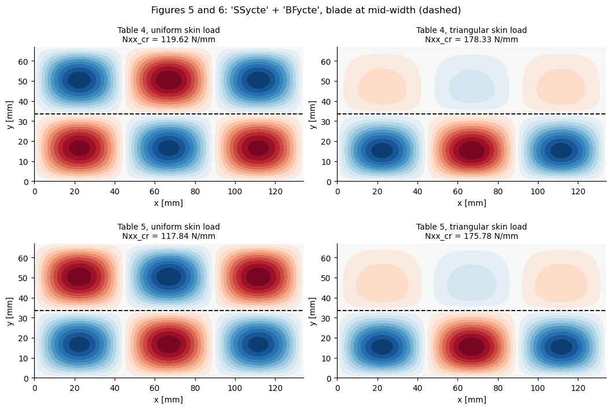
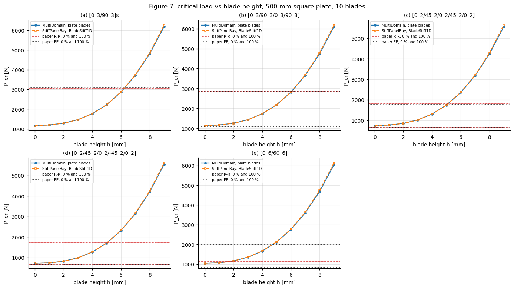
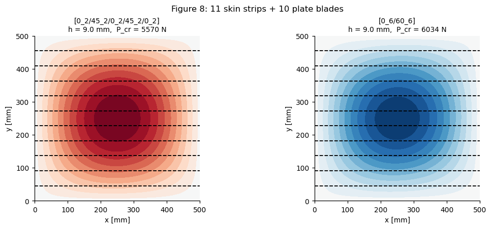

Reproducing Stamatelos & Labeas (2023) with panels.multidomain.MultiDomain#
Paper. D. G. Stamatelos, G. N. Labeas, Buckling Analysis of Laminated Stiffened Plates with Material Anisotropy Using the Rayleigh-Ritz Approach, Computation 2023, 11, 110. doi:10.3390/computation11060110
This notebook is the MultiDomain counterpart of stamatelos_labeas_2023.ipynb. That notebook models the plate with a single Shell domain and every blade with the beam formulation of BladeStiff1D. Here the structure is assembled from several plate_clpt_donnell domains, connected by penalty springs, and every connection strategy of MultiDomain.get_kC_conn() is exercised:
connection |
used for |
paper item |
|---|---|---|
|
skin split in strips along |
Table 3, Figure 7 |
|
skin split in strips along |
Table 2 |
|
blade as a plate domain standing on the skin |
Tables 4 and 5, Figures 5 to 8 |
|
the same stiffened plate rotated by 90 degrees |
Tables 4 and 5 |
|
unsymmetric skin split in two bonded sub-laminates |
Table 3 |
Each result is compared three ways: against the paper, against the single-domain StiffPanelBay model of the companion notebook, and between the MultiDomain variants themselves.
Read this first#
The published values, laminates and single-domain helpers are imported from
tests/tests_stiffpanelbay/test_stamatelos_labeas_2023.py, so this notebook, the companion notebook and both test modules share one source of truth. The remarks of the companion notebook on the paper itself (Table 2 against Figure 7, the missing absolute scale of Section 3.1.2, the Table 5 triangular entry) apply unchanged and are not repeated here.Tables 3, 4 and 5 are compared through the same single factor calibrated on mode (1, 1) of Table 3 with the single-domain model. Nothing is re-fitted for
MultiDomain.The penalty constants default to
calc_kt_kr(). For these thin skins the default rotation penalty is soft and leaves a converged error of about 2 %. Where more digits are wanted, the penalties are raised byPENALTY_FACTORthrough the keys'kt'and'kr'of the connection dictionaries. Section 3 quantifies this.The flange of
BladeStiff1Dhas the torsional stiffnessGJ = 4 bf D66of the flange laminate, and'SB'connects the faces in contact with the kinematics of each sub-laminate.
The same checks run as unit tests in tests/multidomain/test_stamatelos_labeas_2023_multidomain.py.
[1]:
import os
%matplotlib inline
import sys
import time
sys.path.append('..') # run this notebook from the repository
sys.path.append(os.path.join('..', 'tests', 'tests_stiffpanelbay'))
import numpy as np
import matplotlib.pyplot as plt
from numpy.polynomial.legendre import leggauss
from scipy.sparse import coo_matrix, csr_matrix
import panels.bardell as bardell
from panels.shell import Shell
from panels.multidomain import MultiDomain
from panels.multidomain.connections import calc_kt_kr
from composites import laminated_plate
from structsolve import lb
from functools import partial
# the connections are the penalty stiffnesses studied here; the default of
# MultiDomain, the null-space method, is compared in conn_method_comparison.ipynb
MultiDomain = partial(MultiDomain, conn_method='penalty')
# single source of truth: published values, laminates and the single-domain model
import test_stamatelos_labeas_2023 as spb
from test_stamatelos_labeas_2023 import (PAPER, LAMINATES, PLY_T,
LAMINAPROP_311, A_311, B_311, LAMINAPROP_312, STACK_312, T_312, A_312,
B_312, H_321, A_322, B_322, N_STIFF_322, STIFF_STACK_322)
np.set_printoptions(precision=5, suppress=True)
plt.rcParams.update({'figure.dpi': 110, 'font.size': 9, 'axes.grid': True,
'grid.alpha': 0.3, 'axes.spines.top': False,
'axes.spines.right': False})
T0 = time.time()
1. Helper functions#
Domains. Every skin strip, blade and sub-laminate is a simply supported plate_clpt_donnell Shell. An edge that is connected to another domain is released (u = v = w free), because the connection is then what enforces compatibility.
Linearly varying load. Eq. (18) of the paper, \(N_x(y) = N_x\,(1 - \varphi\,y/b)\), is integrated per domain with the Bardell functions, with the weight evaluated at the global y of the domain, y = y0 + b_domain (1 + eta)/2. For a single domain this is exactly the kG_linear of the companion notebook; for the rotated model (direction='y') the same load acts as \(N_y(x)\).
Blade as a plate. The 'BFycte' connection ties the blade root to the skin mid-surface, so the blade domain is extended by t_skin/2 to reach the same tip as a blade of height h standing on the skin surface, which is the geometry of the paper and of BladeStiff1D. The blade ends are simply supported but free to move along the blade axis: forcing u = 0 over the whole height would clamp the blade against bending, which the skin does not do.
[2]:
PENALTY_FACTOR = 100.
def plate(a, b, stack, m, n, laminaprop=LAMINAPROP_312, **kwargs):
# Simply supported plate domain, as in spb.make_skin
return Shell(a=a, b=b, r=None, stack=stack, plyt=PLY_T,
laminaprop=laminaprop, rho=1600., model='plate_clpt_donnell',
m=m, n=n, **kwargs)
def release(p, *edges):
# Free the three translations of the given edges (rotations are already free)
for edge in edges:
for dof in ('u', 'v', 'w'):
setattr(p, edge + dof, 1.)
def penalties(p1, p2, connection_type, factor):
# Connection keys 'kt' and 'kr', scaled from the calc_kt_kr() defaults
kt, kr = calc_kt_kr(p1, p2, connection_type)
return dict(kt=factor*kt, kr=factor*kr)
def kG_linear(p, N, phi, s0, s_total, size, direction='x', npts=80):
# kG of one domain for N*(1 - phi*s/s_total), s = y (direction='x') or x ('y')
m, n, a, b = p.m, p.n, p.a, p.b
xi, wt = leggauss(npts)
if direction == 'x':
f_xi = np.array([bardell.calc_vec_fp(x, p.x1w, p.x1wr, p.x2w, p.x2wr)[:m]
for x in xi])
fy = np.array([bardell.calc_vec_f(e, p.y1w, p.y1wr, p.y2w, p.y2wr)[:n]
for e in xi])
Fx = (f_xi.T*wt) @ f_xi
Fy = (fy.T*(wt*(1. - phi*(s0 + b*(1. + xi)/2.)/s_total))) @ fy
scale = b/a
else:
fx = np.array([bardell.calc_vec_f(x, p.x1w, p.x1wr, p.x2w, p.x2wr)[:m]
for x in xi])
g_eta = np.array([bardell.calc_vec_fp(e, p.y1w, p.y1wr, p.y2w, p.y2wr)[:n]
for e in xi])
Fx = (fx.T*(wt*(1. - phi*(s0 + a*(1. + xi)/2.)/s_total))) @ fx
Fy = (g_eta.T*wt) @ g_eta
scale = a/b
blk = N*scale*np.einsum('ik,jl->jilk', Fx, Fy).reshape(m*n, m*n)
idx = p.row_start + 3*np.arange(m*n) + 2 # w is the 3rd dof
rows, cols = np.meshgrid(idx, idx, indexing='ij')
return coo_matrix((blk.ravel(), (rows.ravel(), cols.ravel())),
shape=(size, size)).tocsr()
def buckling(md, kG, num_eigvalues=6, c=None):
kC = md.calc_kC(c=c, silent=True)
return lb(csr_matrix(kC), csr_matrix(kG), silent=True,
num_eigvalues=num_eigvalues)
def strips(a, b, stack, nstrip, m, n, along, factor, laminaprop=LAMINAPROP_312):
# Skin split in nstrip equal strips, connected with 'SSycte' or 'SSxcte'
if along == 'y':
edges = np.linspace(0, b, nstrip + 1)
skins = [plate(a, y2 - y1, stack, m, n, laminaprop, x0=0., y0=y1,
group='skin') for y1, y2 in zip(edges[:-1], edges[1:])]
conn = [dict(p1=p1, p2=p2, func='SSycte', ycte1=p1.b, ycte2=0.,
**penalties(p1, p2, 'ycte', factor))
for p1, p2 in zip(skins[:-1], skins[1:])]
for p1, p2 in zip(skins[:-1], skins[1:]):
release(p1, 'y2')
release(p2, 'y1')
else:
edges = np.linspace(0, a, nstrip + 1)
skins = [plate(x2 - x1, b, stack, m, n, laminaprop, x0=x1, y0=0.,
group='skin') for x1, x2 in zip(edges[:-1], edges[1:])]
conn = [dict(p1=p1, p2=p2, func='SSxcte', xcte1=p1.a, xcte2=0.,
**penalties(p1, p2, 'xcte', factor))
for p1, p2 in zip(skins[:-1], skins[1:])]
for p1, p2 in zip(skins[:-1], skins[1:]):
release(p1, 'x2')
release(p2, 'x1')
return skins, conn
def blade(length, height, stack, m, n, along, laminaprop=LAMINAPROP_312,
t_skin=T_312):
# Blade as a plate domain, attached by its edge y = 0 ('x') or x = 0 ('y')
h = height + t_skin/2
if along == 'x':
f = plate(length, h, stack, m, n, laminaprop, x0=0., y0=0., group='blade')
release(f, 'y1', 'y2')
f.x1u = f.x2u = 1.
else:
f = plate(h, length, stack, m, n, laminaprop, x0=0., y0=0., group='blade')
release(f, 'x1', 'x2')
f.y1v = f.y2v = 1.
return f
def rotate(stack):
return [theta + 90 for theta in stack]
def plot_md_mode(ax, md, c, title, group='skin', blade_ys=(), gridx=80,
gridy=30):
# w of all domains of a group, in global coordinates, normalised to max|w| = 1
ps = [p for p in md.panels if p.group == group]
res = md.uvw(c, group=group, gridx=gridx, gridy=gridy)
lim = max(np.abs(w).max() for w in res['w'])
levels = np.linspace(-1, 1, 22)
for p, x, y, w in zip(ps, res['x'], res['y'], res['w']):
cs = ax.contourf((x + p.x0)*1e3, (y + p.y0)*1e3, w/lim, levels=levels,
cmap='RdBu_r')
for y in blade_ys:
ax.axhline(y*1e3, color='k', lw=1.2, ls='--')
ax.set_aspect('equal')
ax.set_title(title, fontsize=9)
ax.set_xlabel('x [mm]')
ax.set_ylabel('y [mm]')
ax.grid(False)
return cs
def pct(value, reference):
if reference is None or reference == 0:
return np.nan
return 100.*(value/reference - 1.)
def show(rows, header):
widths = [max(len(header[i]), max(len(str(r[i])) for r in rows)) + 2
for i in range(len(header))]
line = ''.join(h.rjust(w) for h, w in zip(header, widths))
print(line)
print('-'*len(line))
for r in rows:
print(''.join(str(c).rjust(w) for c, w in zip(r, widths)))
2. The load helper and the scale factor#
kG_linear placed at the rows of a single domain at (x0, y0) = (0, 0) must be the matrix of the companion notebook. The scale factor of Tables 3 to 5 is then taken from the single-domain model, exactly as in the companion notebook.
[3]:
p = plate(A_312, B_312, STACK_312, 16, 16)
p.row_start = 0
size = p.get_size()
err = 0.
for phi in (0., 1.):
k_md = kG_linear(p, -1., phi, 0., B_312, size).toarray()
k_sd = spb.kG_linear(spb.make_skin(A_312, B_312, STACK_312, PLY_T,
LAMINAPROP_312), -1., phi).toarray()
err = max(err, np.abs(k_md - k_sd).max()/np.abs(k_sd).max())
print('kG_linear per domain vs single-domain helper: max rel. diff = %.2e' % err)
SCALE, EV_SD_T3 = spb.table3_scale()
print('scale factor of Table 3, from the single-domain model: %.5f' % SCALE)
kG_linear per domain vs single-domain helper: max rel. diff = 1.37e-16
scale factor of Table 3, from the single-domain model: 4.73840
3. 'SSycte' and 'SSxcte' - penalty stiffness and convergence#
The Section 3.1.2 plate under the triangular load is split in three equal strips, first along y ('SSycte', connections parallel to the load) then along x ('SSxcte', connections across the load). The split models must recover the single-domain eigenvalues. Penalty methods are always too flexible, so the error must be negative and shrink as the penalties grow.
[4]:
skin_sd = spb.make_skin(A_312, B_312, STACK_312, PLY_T, LAMINAPROP_312)
ref_sd, _ = spb.buckling(skin_sd, phi=1.)
factors = (0.1, 1., 10., 100., 1000.)
res_pen = {}
for along, (m, n) in (('y', (12, 8)), ('x', (8, 12))):
for factor in factors:
skins, conn = strips(A_312, B_312, STACK_312, 3, m, n, along, factor)
mdom = MultiDomain(skins, conn)
size = mdom.get_size()
kG = sum(kG_linear(p, -1., 1., p.y0, B_312, size) for p in skins)
ev, _ = buckling(mdom, kG)
res_pen[(along, factor)] = ev
print('3 strips, triangular load: per cent difference to the single domain')
rows = []
for along, func in (('y', 'SSycte'), ('x', 'SSxcte')):
for factor in factors:
ev = res_pen[(along, factor)]
rows.append([func, '%g' % factor] + ['%+.4f' % pct(ev[i], ref_sd[i])
for i in range(3)])
show(rows, ['connection', 'kt, kr x', 'mode 1', 'mode 2', 'mode 3'])
s1, s2 = strips(A_312, B_312, STACK_312, 3, 12, 8, 'y', 1.)[0][:2]
kt, kr = calc_kt_kr(s1, s2, 'ycte')
print('\ncalc_kt_kr defaults for these strips: kt = %.3e N/m^2, kr = %.3e N' % (kt, kr))
3 strips, triangular load: per cent difference to the single domain
connection kt, kr x mode 1 mode 2 mode 3
--------------------------------------------------
SSycte 0.1 -15.6134 -4.8098 -2.3246
SSycte 1 -2.0113 -0.6163 -0.2951
SSycte 10 -0.2071 -0.0634 -0.0302
SSycte 100 -0.0208 -0.0064 -0.0029
SSycte 1000 -0.0020 -0.0006 -0.0002
SSxcte 0.1 -7.1922 -5.4370 -0.0175
SSxcte 1 -0.3287 -0.9886 -0.0019
SSxcte 10 -0.0331 -0.0992 -0.0002
SSxcte 100 -0.0033 -0.0099 +0.0000
SSxcte 1000 -0.0003 -0.0010 +0.0000
calc_kt_kr defaults for these strips: kt = 4.860e+10 N/m^2, kr = 7.937e+02 N
[5]:
print("'SSycte', 3 strips, penalties x %g: convergence in the number of terms"
% PENALTY_FACTOR)
rows = []
for m, n in ((8, 6), (10, 6), (12, 8), (14, 8), (16, 10)):
skins, conn = strips(A_312, B_312, STACK_312, 3, m, n, 'y', PENALTY_FACTOR)
mdom = MultiDomain(skins, conn)
size = mdom.get_size()
kG = sum(kG_linear(p, -1., 1., p.y0, B_312, size) for p in skins)
ev, _ = buckling(mdom, kG)
rows.append(['%d x %d' % (m, n), size] +
['%+.4f' % pct(ev[i], ref_sd[i]) for i in range(3)])
show(rows, ['m x n', 'dofs', 'mode 1 %', 'mode 2 %', 'mode 3 %'])
'SSycte', 3 strips, penalties x 100: convergence in the number of terms
m x n dofs mode 1 % mode 2 % mode 3 %
---------------------------------------------
8 x 6 432 -0.0207 -0.0041 +2.0637
10 x 6 540 -0.0207 -0.0063 +0.0302
12 x 8 864 -0.0208 -0.0064 -0.0029
14 x 8 1008 -0.0208 -0.0064 -0.0030
16 x 10 1440 -0.0208 -0.0064 -0.0030
4. Section 3.1.1 / Table 2 - three 'SSxcte' strips across the load#
The five laminates of Table 2, a = b = 254 mm, uniform load, loaded edges clamped (the companion notebook shows this is the boundary condition that makes Table 2 consistent with Lagace). The skin is split in three strips across the loading direction, so the connections carry the full compressive load, and the clamped rotations sit on the outer edges of the first and last strips.
[6]:
res_t2 = {}
for name, stack in LAMINATES.items():
skin = spb.make_skin(A_311, B_311, stack, PLY_T, LAMINAPROP_311,
clamped_loaded_edges=True)
ref, _ = spb.buckling(skin)
skins, conn = strips(A_311, B_311, stack, 3, 8, 12, 'x', PENALTY_FACTOR,
laminaprop=LAMINAPROP_311)
skins[0].x1wr = 0.
skins[-1].x2wr = 0.
mdom = MultiDomain(skins, conn)
size = mdom.get_size()
kG = sum(kG_linear(p, -1., 0., 0., B_311, size) for p in skins)
ev, evec = buckling(mdom, kG)
res_t2[name] = dict(Nxx=ev[0]/1e3, sd=ref[0]/1e3, md=mdom, evec=evec)
rows = []
for name in LAMINATES:
r, ref = res_t2[name], PAPER['table2'][name]
rows.append([name, '%.3f' % r['Nxx'], '%.3f' % r['sd'],
'%+.3f' % pct(r['Nxx'], r['sd']), '%.3f' % ref['rr'],
'%+.1f' % pct(r['Nxx'], ref['rr']), '%.3f' % ref['lagace_rr'],
'%+.1f' % pct(r['Nxx'], ref['lagace_rr'])])
show(rows, ['lamination', 'MultiDomain', 'single dom.', 'diff %',
'paper R-R', 'diff %', 'Lagace R-R', 'diff %'])
lamination MultiDomain single dom. diff % paper R-R diff % Lagace R-R diff %
---------------------------------------------------------------------------------------------------
[0_3/90_3]s 27.150 27.152 -0.006 26.475 +2.6 27.150 +0.0
[0_3/90_3/0_3/90_3] 17.256 17.257 -0.004 17.514 -1.5 20.439 -15.6
[0_2/45_2/0_2/45_2/0_2] 15.943 15.943 -0.005 22.789 -30.0 18.389 -13.3
[0_2/45_2/0_2/-45_2/0_2] 15.027 15.028 -0.005 20.426 -26.4 17.770 -15.4
[0_6/60_6] 12.110 12.110 +0.001 17.788 -31.9 18.000 -32.7
[7]:
fig, axes = plt.subplots(1, 2, figsize=(9, 3.6), constrained_layout=True)
for ax, name in zip(axes, ['[0_2/45_2/0_2/-45_2/0_2]', '[0_6/60_6]']):
r = res_t2[name]
cs = plot_md_mode(ax, r['md'], r['evec'][:, 0],
'%s\nNxx_cr = %.3f N/mm' % (name, r['Nxx']), gridx=40,
gridy=60)
for p in r['md'].panels[1:]:
ax.axvline(p.x0*1e3, color='0.4', lw=0.8, ls=':')
fig.suptitle("Figures 3 and 4 with three 'SSxcte' strips (dotted: connections)")
plt.show()

5. Section 3.1.2 / Table 3 - three 'SSycte' strips, triangular load#
The scale factor is the one of section 2, calibrated on the single-domain model. The split model is not re-fitted, so mode (1, 1) is itself a check.
[8]:
skins, conn = strips(A_312, B_312, STACK_312, 3, 12, 8, 'y', PENALTY_FACTOR)
md_t3 = MultiDomain(skins, conn)
size = md_t3.get_size()
kG = sum(kG_linear(p, -1., 1., p.y0, B_312, size) for p in skins)
ev_t3, evec_t3 = buckling(md_t3, kG)
rows = []
for i, mode in enumerate(['(1, 1)', '(2, 1)', '(3, 1)']):
ref = PAPER['table3'][mode]
v = ev_t3[i]/1e3*SCALE
v_sd = EV_SD_T3[i]/1e3*SCALE
rows.append([mode, '%.3f' % v, '%.3f' % v_sd, '%+.3f' % pct(v, v_sd),
'%.3f' % ref['rr'], '%+.2f' % pct(v, ref['rr']),
'%.3f' % ref['fe'], '%+.1f' % pct(v, ref['fe'])])
show(rows, ['mode (m, n)', 'MultiDomain', 'single dom.', 'diff %',
'paper R-R', 'diff %', 'paper FE', 'diff %'])
fig, axes = plt.subplots(1, 3, figsize=(12, 3.0), constrained_layout=True)
for i, ax in enumerate(axes):
plot_md_mode(ax, md_t3, evec_t3[:, i],
'mode %d: Nxx_cr = %.3f N/mm' % (i + 1, ev_t3[i]/1e3*SCALE))
for p in md_t3.panels[1:]:
ax.axhline(p.y0*1e3, color='0.4', lw=0.8, ls=':')
fig.suptitle("Table 3 with three 'SSycte' strips (dotted: connections)")
plt.show()
mode (m, n) MultiDomain single dom. diff % paper R-R diff % paper FE diff %
------------------------------------------------------------------------------------
(1, 1) 67.735 67.749 -0.021 67.749 -0.02 59.476 +13.9
(2, 1) 69.440 69.444 -0.006 69.298 +0.20 65.803 +5.5
(3, 1) 112.961 112.964 -0.003 113.310 -0.31 108.266 +4.3

The same skin as two bonded sub-laminates: 'SB' and 'SB_TSL'#
The [0/90/90/0/0] skin of Table 3 is unsymmetric, so its buckling load depends on the bending-extension coupling B. Here it is split through the thickness into a bottom [0/90] and a top [90/0/0] domain, bonded over their whole area. Each sub-laminate alone has a different B, so the monolithic B can only be rebuilt by the connection, which ties the displacements of the faces in contact, each at its distance from the mid-surface of its sub-laminate. The split skin is simply
supported with u = v = 0 on the mid-surface of the top part, so the monolithic reference is given the same reference surface with offset.
'SB_TSL' is the traction-separation-law version of the same connection, evaluated for a pristine interface (zero separation, stiffness k_o everywhere). The order of the two domains in the assembly must not matter.
[9]:
N_BOTTOM = 2 # plies of the bottom sub-laminate, stack[0] is at -z
M_SB = N_SB = 12
def sb_split(func, order, kt=None):
top = plate(A_312, B_312, STACK_312[N_BOTTOM:], M_SB, N_SB, x0=0., y0=0.,
group='top')
bot = plate(A_312, B_312, STACK_312[:N_BOTTOM], M_SB, N_SB, x0=0., y0=0.,
group='bottom')
release(bot, 'x1', 'x2', 'y1', 'y2') # the bottom only follows the top
if kt is None:
kt = PENALTY_FACTOR*calc_kt_kr(top, bot, 'bot-top')[0]
if func == 'SB':
conn = [dict(p1=top, p2=bot, func='SB', kt=kt)]
else:
conn = [dict(p1=top, p2=bot, func='SB_TSL', tsl_type='bilinear',
k_o=kt, tau_o=1e30, G1c=1e30, nr_x_gauss=2*M_SB,
nr_y_gauss=2*N_SB)]
mdom = MultiDomain([top, bot] if order == 'top first' else [bot, top],
conn)
size = mdom.get_size()
c = np.zeros(size) if func == 'SB_TSL' else None
kG = kG_linear(top, -1., 1., 0., B_312, size) # w is common to both
ev, _ = buckling(mdom, kG, num_eigvalues=4, c=c)
return ev
def sb_monolithic(offset=True):
h_bottom = N_BOTTOM*PLY_T
mono = plate(A_312, B_312, STACK_312, M_SB, N_SB,
offset=-h_bottom/2 if offset else 0.)
mono.row_start = 0
size = mono.get_size()
ev, _ = lb(mono.calc_kC(silent=True),
kG_linear(mono, -1., 1., 0., B_312, size), silent=True,
num_eigvalues=4)
return ev
ev_mono = sb_monolithic()
rows = [['monolithic, offset', '-'] + ['%.4f' % (e/1e3) for e in ev_mono[:3]]
+ ['-']]
res_sb = {}
for func in ('SB', 'SB_TSL'):
for order in ('top first', 'bottom first'):
ev = sb_split(func, order)
res_sb[(func, order)] = ev
rows.append([func, order] + ['%.4f' % (e/1e3) for e in ev[:3]]
+ ['%+.3f' % pct(ev[0], ev_mono[0])])
print('triangular load, raw N/mm (not scaled):')
show(rows, ['model', 'order', 'mode 1', 'mode 2', 'mode 3', 'mode 1 diff %'])
ev_mid = sb_monolithic(offset=False)
print('\nfor reference, the monolithic skin supported on its own mid-surface:'
' mode 1 = %.4f N/mm' % (ev_mid[0]/1e3))
triangular load, raw N/mm (not scaled):
model order mode 1 mode 2 mode 3 mode 1 diff %
----------------------------------------------------------------------------
monolithic, offset - 17.3172 24.1725 25.7686 -
SB top first 17.3086 24.1616 25.7500 -0.050
SB bottom first 17.3086 24.1616 25.7500 -0.050
SB_TSL top first 17.3086 24.1616 25.7500 -0.050
SB_TSL bottom first 17.3086 24.1616 25.7500 -0.050
for reference, the monolithic skin supported on its own mid-surface: mode 1 = 14.2979 N/mm
6. Sections 3.2.1 / Tables 4 and 5 - one blade as a plate domain#
One blade of height h = 9 t_skin and the lamination of the skin stands at mid-width. Three MultiDomain models of the same structure are built:
edge: two skin strips joined by
'SSycte', the blade attached with'BFycte'to their common edge;interior: a single skin domain, the blade attached with
'BFycte'along the liney = b/2, in the interior of the skin domain;rotated: the edge model rotated by 90 degrees (
'SSxcte'and'BFxcte', ply angles + 90, load alongy), which must reproduce edge to machine precision.
For Table 5 the blade is loaded per Eq. (8), with the axial force of the beam of the companion model, E1 h, spread over the height of the plate domain, so both models carry the same blade load.
[10]:
def blade_axial_load(load_blade):
# Blade Nxx per unit skin Nxx, the paper's Eq. (8)
if not load_blade:
return 0.
skin = spb.make_skin(A_312, B_312, STACK_312, PLY_T, LAMINAPROP_312)
st = spb.add_stiffeners(skin, 1, H_321, STACK_312, PLY_T,
LAMINAPROP_312)[0]
Et_skin = spb.Et_reduced(STACK_312, PLY_T, LAMINAPROP_312)
return -st.E1*H_321/Et_skin/(H_321 + T_312/2)
def single_blade(variant, phi, load_blade, factor=1.):
if variant == 'rotated':
skins, conn = strips(B_312, A_312, rotate(STACK_312), 2, 10, 12,
along='x', factor=factor)
f = blade(A_312, H_321, rotate(STACK_312), 6, 12, along='y')
conn.append(dict(p1=skins[0], p2=f, func='BFxcte', xcte1=skins[0].a,
xcte2=0., **penalties(skins[0], f, 'xcte', factor)))
f.Nyy = blade_axial_load(load_blade)
else:
if variant == 'edge':
skins, conn = strips(A_312, B_312, STACK_312, 2, 12, 10, along='y',
factor=factor)
ycte1 = skins[0].b
else:
skins = [plate(A_312, B_312, STACK_312, 16, 16, x0=0., y0=0.,
group='skin')]
conn = []
ycte1 = B_312/2
f = blade(A_312, H_321, STACK_312, 12, 6, along='x')
conn.append(dict(p1=skins[0], p2=f, func='BFycte', ycte1=ycte1,
ycte2=0., **penalties(skins[0], f, 'ycte', factor)))
f.Nxx = blade_axial_load(load_blade)
mdom = MultiDomain(skins + [f], conn)
size = mdom.get_size()
if variant == 'rotated':
kG = sum(kG_linear(p, -1., phi, p.x0, B_312, size, direction='y')
for p in skins)
else:
kG = sum(kG_linear(p, -1., phi, p.y0, B_312, size) for p in skins)
kG = kG + f.calc_kG(size=size, row0=f.row_start, col0=f.col_start,
silent=True, finalize=True)
ev, evec = buckling(mdom, kG)
return ev, evec, mdom
print('blade Nxx per unit skin Nxx when loaded (Eq. 8): %.4f'
% blade_axial_load(True))
CASES = [('table4', 'uniform'), ('table4', 'triangular'),
('table5', 'uniform'), ('table5', 'triangular')]
res_t45 = {}
for table, load in CASES:
phi = 0. if load == 'uniform' else 1.
loaded = table == 'table5'
skin = spb.make_skin(A_312, B_312, STACK_312, PLY_T, LAMINAPROP_312)
sts = spb.add_stiffeners(skin, 1, H_321, STACK_312, PLY_T, LAMINAPROP_312)
ref, _ = spb.buckling(skin, sts, phi=phi, loaded_stiffeners=loaded,
Et_skin=spb.Et_reduced(STACK_312, PLY_T,
LAMINAPROP_312))
r = dict(sd=ref[0]/1e3*SCALE)
for variant, factor in (('edge', 1.), ('interior', 1.),
('rotated', 1.), ('edge', PENALTY_FACTOR)):
ev, evec, mdom = single_blade(variant, phi, loaded, factor)
r[(variant, factor)] = dict(Nxx=ev[0]/1e3*SCALE, ev=ev, evec=evec,
md=mdom)
res_t45[(table, load)] = r
blade Nxx per unit skin Nxx when loaded (Eq. 8): -0.9435
[11]:
print('Nx_cr in N/mm (x SCALE), blade as a plate, default penalties:')
rows = []
for table, load in CASES:
r, ref = res_t45[(table, load)], PAPER[table][load]
e, i = r[('edge', 1.)]['Nxx'], r[('interior', 1.)]['Nxx']
rows.append(['%s / %s' % (table[-1], load), '%.2f' % e, '%.2f' % i,
'%.2f' % r['sd'], '%.2f' % ref['rr'],
'%+.1f' % pct(e, ref['rr']), '%+.1f' % pct(i, ref['rr']),
'%.3f' % ref['fe'], '%+.1f' % pct(e, ref['fe']),
'%+.1f' % pct(e, r['sd'])])
show(rows, ['Table / load', 'edge', 'interior', 'BladeStiff1D', 'paper R-R',
'edge %', 'interior %', 'paper FE', 'edge %', 'edge vs 1D %'])
print("\n'BFxcte' (rotated) vs 'BFycte' (edge), first three eigenvalues,"
" and the effect of penalties x %g:" % PENALTY_FACTOR)
rows = []
for table, load in CASES:
r = res_t45[(table, load)]
ev_e, ev_r = r[('edge', 1.)]['ev'], r[('rotated', 1.)]['ev']
e100 = r[('edge', PENALTY_FACTOR)]['Nxx']
rows.append(['%s / %s' % (table[-1], load),
'%.2e' % np.abs(ev_r[:3]/ev_e[:3] - 1).max(),
'%.2f' % e100, '%+.2f' % pct(e100, r[('edge', 1.)]['Nxx']),
'%+.1f' % pct(e100, PAPER[table][load]['rr']),
'%+.1f' % pct(e100, r['sd'])])
show(rows, ['Table / load', 'max |rotated/edge - 1|', 'edge x100',
'vs edge x1 %', 'vs paper R-R %', 'vs BladeStiff1D %'])
Nx_cr in N/mm (x SCALE), blade as a plate, default penalties:
Table / load edge interior BladeStiff1D paper R-R edge % interior % paper FE edge % edge vs 1D %
---------------------------------------------------------------------------------------------------------------
4 / uniform 119.62 119.78 119.01 119.60 +0.0 +0.2 116.265 +2.9 +0.5
4 / triangular 178.33 179.45 179.21 172.92 +3.1 +3.8 171.755 +3.8 -0.5
5 / uniform 117.84 117.90 119.01 118.45 -0.5 -0.5 112.542 +4.7 -1.0
5 / triangular 175.78 176.89 179.19 184.05 -4.5 -3.9 168.747 +4.2 -1.9
'BFxcte' (rotated) vs 'BFycte' (edge), first three eigenvalues, and the effect of penalties x 100:
Table / load max |rotated/edge - 1| edge x100 vs edge x1 % vs paper R-R % vs BladeStiff1D %
----------------------------------------------------------------------------------------------------
4 / uniform 1.06e-10 119.75 +0.11 +0.1 +0.6
4 / triangular 2.62e-10 179.11 +0.44 +3.6 -0.1
5 / uniform 1.65e-10 117.89 +0.04 -0.5 -0.9
5 / triangular 3.14e-10 176.58 +0.46 -4.1 -1.5
[12]:
print('w of the skin along the blade line, normalised by max|w| over the skin:')
for key in CASES:
d = res_t45[key][('edge', 1.)]
res = d['md'].uvw(d['evec'][:, 0], group='skin', gridx=60, gridy=30)
wmax = max(np.abs(w).max() for w in res['w'])
w_line = np.abs(res['w'][0][-1, :]).max() # y = b/2, strip 1
print(' %-22s %.4f' % ('%s / %s' % key, w_line/wmax))
fig, axes = plt.subplots(2, 2, figsize=(9.5, 6.4), constrained_layout=True)
for ax, (table, load) in zip(axes.ravel(), CASES):
d = res_t45[(table, load)][('edge', 1.)]
plot_md_mode(ax, d['md'], d['evec'][:, 0],
'Table %s, %s skin load\nNxx_cr = %.2f N/mm'
% (table[-1], load, d['Nxx']), blade_ys=[B_312/2])
fig.suptitle("Figures 5 and 6: 'SSycte' + 'BFycte', blade at mid-width (dashed)")
plt.show()
w of the skin along the blade line, normalised by max|w| over the skin:
table4 / uniform 0.0037
table4 / triangular 0.0302
table5 / uniform 0.0037
table5 / triangular 0.0294

7. Section 3.2.2 / Figure 7 - ten plate-domain blades#
Simply supported 500 mm square plates, the five laminations of Table 2, ten equidistant [0/90]s blades of 0.536 mm thickness. The skin is split in eleven 'SSycte' strips and each blade is attached with 'BFycte' to the common edge of two strips, so the model has 21 domains. The blade height is swept from 0 to 9 mm and P_cr = Nx_cr b is compared with the ten BladeStiff1D beams of the companion notebook, which use 16 x 16 terms on a single skin domain, and with the published end
points of each curve. Penalties are raised by PENALTY_FACTOR.
The companion notebook explains why the abscissa of Figure 7 is ambiguous; the comparison is again made against the blade height.
[13]:
def figure7(stack, height, m=12, n=6, mf=12, nf=4, factor=PENALTY_FACTOR):
t_skin = len(stack)*PLY_T
skins, conn = strips(A_322, B_322, stack, N_STIFF_322 + 1, m, n, 'y',
factor, laminaprop=LAMINAPROP_311)
blades = []
if height > 0:
for p in skins[:-1]:
f = blade(A_322, height, STIFF_STACK_322, mf, nf, 'x',
laminaprop=LAMINAPROP_311, t_skin=t_skin)
conn.append(dict(p1=p, p2=f, func='BFycte', ycte1=p.b, ycte2=0.,
**penalties(p, f, 'ycte', factor)))
blades.append(f)
mdom = MultiDomain(skins + blades, conn)
size = mdom.get_size()
kG = sum(kG_linear(p, -1., 0., p.y0, B_322, size) for p in skins)
ev, evec = buckling(mdom, kG, num_eigvalues=4)
return ev[0]*B_322, evec, mdom
heights = np.linspace(0., 9.e-3, 10)
res_f7 = {}
t = time.time()
for name, stack in LAMINATES.items():
P_md, P_sd, modes = [], [], {}
for h in heights:
P, evec, mdom = figure7(stack, h)
P_md.append(P)
if h == heights[-1]:
modes = dict(evec=evec, md=mdom)
skin = spb.make_skin(A_322, B_322, stack, PLY_T, LAMINAPROP_311)
sts = () if h == 0. else spb.add_stiffeners(
skin, N_STIFF_322, h, STIFF_STACK_322, PLY_T, LAMINAPROP_311)
ev, _ = spb.buckling(skin, sts)
P_sd.append(ev[0]*B_322)
res_f7[name] = dict(P_md=np.array(P_md), P_sd=np.array(P_sd), mode=modes)
print('Figure 7 sweep: %.0f s' % (time.time() - t))
print('\nP_cr [N], MultiDomain / BladeStiff1D, per cent difference:')
rows = []
for name in LAMINATES:
d = res_f7[name]
rows.append([name] + ['%+.1f' % pct(a, b) for a, b in zip(d['P_md'],
d['P_sd'])])
show(rows, ['lamination'] + ['h=%.0f' % (h*1e3) for h in heights])
DenseFallbackWarning: Linear buckling analysis: the sparse solvers failed (eigsh() in Cayley mode: relative residual 2.22e-02 > 1.0e-03 for the load multiplier 8881.442328866315; eigsh() in Cayley mode with a 10 times larger shift: relative residual 2.22e-02 > 1.0e-03 for the load multiplier 8881.442328866315), using the dense solver eigh() with condensed dofs of size 640 as a last resort
ev, evec = buckling(mdom, kG, num_eigvalues=4)
DenseFallbackWarning: Linear buckling analysis: the sparse solvers failed (eigsh() in Cayley mode: relative residual 1.36e-02 > 1.0e-03 for the load multiplier 7774.25206922058; eigsh() in Cayley mode with a 10 times larger shift: relative residual 1.36e-02 > 1.0e-03 for the load multiplier 7774.25206922058), using the dense solver eigh() with condensed dofs of size 640 as a last resort
ev, evec = buckling(mdom, kG, num_eigvalues=4)
DenseFallbackWarning: Linear buckling analysis: the sparse solvers failed (eigsh() in Cayley mode: relative residual 6.90e-03 > 1.0e-03 for the load multiplier 8583.839706413368; eigsh() in Cayley mode with a 10 times larger shift: relative residual 6.90e-03 > 1.0e-03 for the load multiplier 8583.839706413368), using the dense solver eigh() with condensed dofs of size 640 as a last resort
ev, evec = buckling(mdom, kG, num_eigvalues=4)
Figure 7 sweep: 64 s
P_cr [N], MultiDomain / BladeStiff1D, per cent difference:
lamination h=0 h=1 h=2 h=3 h=4 h=5 h=6 h=7 h=8 h=9
--------------------------------------------------------------------------------------
[0_3/90_3]s -0.0 +0.2 +0.2 +0.2 +0.1 -0.1 -0.3 -0.6 -0.9 -1.3
[0_3/90_3/0_3/90_3] -0.0 +0.2 +0.2 +0.2 +0.1 -0.1 -0.3 -0.6 -0.9 -1.3
[0_2/45_2/0_2/45_2/0_2] -0.0 +0.2 +0.2 +0.2 +0.1 -0.1 -0.3 -0.6 -0.9 -1.3
[0_2/45_2/0_2/-45_2/0_2] -0.0 +0.2 +0.2 +0.2 +0.1 -0.1 -0.3 -0.6 -0.9 -1.3
[0_6/60_6] -0.0 +0.2 +0.1 -0.1 -0.3 -0.5 -0.7 -0.9 -1.2 -1.6
[14]:
rows = []
for name in LAMINATES:
d, ref = res_f7[name], PAPER['figure7'][name]
rows.append([name, '%.0f' % d['P_md'][0], '%.0f' % d['P_sd'][0],
'%.0f' % ref['P0_rr'], '%+.0f' % pct(d['P_md'][0], ref['P0_rr']),
'%.0f' % ref['P0_fe'], '%+.0f' % pct(d['P_md'][0], ref['P0_fe']),
'%.2f' % (np.interp(ref['Pmax_rr'], d['P_md'], heights)*1e3),
'%.2f' % (np.interp(ref['Pmax_rr'], d['P_sd'], heights)*1e3)])
show(rows, ['lamination', 'MD P0', '1D P0', 'Fig.7 R-R', 'diff %', 'Fig.7 FE',
'diff %', 'MD h at Pmax', '1D h at Pmax'])
print('\nP0: unstiffened intercept, no calibration of any kind.')
print('h at Pmax: blade height at which each model reaches the paper R-R value')
print('quoted at the stiff end of the curve.')
lamination MD P0 1D P0 Fig.7 R-R diff % Fig.7 FE diff % MD h at Pmax 1D h at Pmax
---------------------------------------------------------------------------------------------------------
[0_3/90_3]s 1172 1172 1200 -2 1200 -2 6.22 6.20
[0_3/90_3/0_3/90_3] 1143 1143 1120 +2 1080 +6 6.04 6.03
[0_2/45_2/0_2/45_2/0_2] 746 746 660 +13 660 +13 5.14 5.14
[0_2/45_2/0_2/-45_2/0_2] 718 718 665 +8 660 +9 5.02 5.02
[0_6/60_6] 1037 1037 1120 -7 840 +23 5.08 5.07
P0: unstiffened intercept, no calibration of any kind.
h at Pmax: blade height at which each model reaches the paper R-R value
quoted at the stiff end of the curve.
[15]:
fig, axes = plt.subplots(2, 3, figsize=(12.5, 7.0), constrained_layout=True)
labels = '(a) (b) (c) (d) (e)'.split()
for ax, lab, name in zip(axes.ravel(), labels, LAMINATES):
d, ref = res_f7[name], PAPER['figure7'][name]
ax.plot(heights*1e3, d['P_md'], '-o', ms=3.5, color='C0',
label='MultiDomain, plate blades')
ax.plot(heights*1e3, d['P_sd'], '--s', ms=3, color='C1', mfc='none',
label='StiffPanelBay, BladeStiff1D')
ax.axhline(ref['P0_rr'], color='C3', ls='--', lw=1,
label='paper R-R, 0 % and 100 %')
ax.axhline(ref['Pmax_rr'], color='C3', ls='--', lw=1)
ax.axhline(ref['P0_fe'], color='k', ls=':', lw=1,
label='paper FE, 0 % and 100 %')
ax.axhline(ref['Pmax_fe'], color='k', ls=':', lw=1)
ax.set_title('%s %s' % (lab, name), fontsize=9)
ax.set_xlabel('blade height h [mm]')
ax.set_ylabel('P_cr [N]')
ax.legend(fontsize=6.5, loc='upper left')
axes.ravel()[-1].axis('off')
fig.suptitle('Figure 7: critical load vs blade height, 500 mm square plate, '
'10 blades')
plt.show()

Figure 8 - modes of the stiffest configuration#
The skin deflection of the 21-domain model at h = 9 mm, blades dashed.
[16]:
fig, axes = plt.subplots(1, 2, figsize=(10, 4.0), constrained_layout=True)
for ax, name in zip(axes, ['[0_2/45_2/0_2/45_2/0_2]', '[0_6/60_6]']):
d = res_f7[name]
mdom = d['mode']['md']
plot_md_mode(ax, mdom, d['mode']['evec'][:, 0],
'%s\nh = %.1f mm, P_cr = %.0f N'
% (name, heights[-1]*1e3, d['P_md'][-1]),
blade_ys=[p.y0 for p in mdom.panels
if p.group == 'skin'][1:], gridx=60, gridy=10)
fig.suptitle('Figure 8: 11 skin strips + 10 plate blades')
plt.show()

8. Summary#
[17]:
print('=' * 86)
print('MULTIDOMAIN REPRODUCTION SUMMARY'.center(86))
print('=' * 86)
rows = []
for name in LAMINATES:
r, ref = res_t2[name], PAPER['table2'][name]
rows.append(['T2 ' + name, "3 x 'SSxcte'", '%.3f' % r['Nxx'],
'%.3f' % ref['rr'], '%+.1f%%' % pct(r['Nxx'], ref['rr']),
'%+.3f%%' % pct(r['Nxx'], r['sd'])])
for i, mode in enumerate(['(1, 1)', '(2, 1)', '(3, 1)']):
ref = PAPER['table3'][mode]
v = ev_t3[i]/1e3*SCALE
rows.append(['T3 mode ' + mode, "3 x 'SSycte'", '%.3f' % v,
'%.3f' % ref['rr'], '%+.2f%%' % pct(v, ref['rr']),
'%+.3f%%' % pct(ev_t3[i], EV_SD_T3[i])])
for func in ('SB', 'SB_TSL'):
v = res_sb[(func, 'top first')][0]
# supported on the mid-surface of the top part: not the paper's case
rows.append(['T3 skin, bonded halves', "'%s'" % func,
'%.3f' % (v/1e3*SCALE), '-', '-',
'%+.3f%%' % pct(v, ev_mono[0])])
for table, load in CASES:
r, ref = res_t45[(table, load)], PAPER[table][load]
v = r[('edge', 1.)]['Nxx']
rows.append(['T%s %s' % (table[-1], load), "'BFycte'", '%.2f' % v,
'%.2f' % ref['rr'], '%+.1f%%' % pct(v, ref['rr']),
'%+.1f%%' % pct(v, r['sd'])])
for name in LAMINATES:
d, ref = res_f7[name], PAPER['figure7'][name]
rows.append(['F7 %s, 0%%' % name, "11 x 'SSycte'", '%.0f' % d['P_md'][0],
'%.0f' % ref['P0_rr'], '%+.0f%%' % pct(d['P_md'][0], ref['P0_rr']),
'%+.2f%%' % pct(d['P_md'][0], d['P_sd'][0])])
show(rows, ['paper item', 'connection', 'MultiDomain', 'paper R-R', 'vs R-R',
'vs single dom.'])
print()
print('T2 in N/mm, loaded edges clamped. T3-T5 in N/mm with the single factor')
print('calibrated on T3 (1,1) with the single-domain model. F7 in N, no calibration.')
print("'vs single dom.' is against StiffPanelBay: the single Shell for T2 and T3,")
print('the monolithic laminate for SB, and BladeStiff1D for T4, T5 and F7.')
print('The SB skin is supported on the mid-surface of its top part, a different')
print('boundary condition from Table 3, so it is compared with the monolithic')
print('laminate only.')
print('\nnotebook run time: %.0f s' % (time.time() - T0))
======================================================================================
MULTIDOMAIN REPRODUCTION SUMMARY
======================================================================================
paper item connection MultiDomain paper R-R vs R-R vs single dom.
-------------------------------------------------------------------------------------------------
T2 [0_3/90_3]s 3 x 'SSxcte' 27.150 26.475 +2.6% -0.006%
T2 [0_3/90_3/0_3/90_3] 3 x 'SSxcte' 17.256 17.514 -1.5% -0.004%
T2 [0_2/45_2/0_2/45_2/0_2] 3 x 'SSxcte' 15.943 22.789 -30.0% -0.005%
T2 [0_2/45_2/0_2/-45_2/0_2] 3 x 'SSxcte' 15.027 20.426 -26.4% -0.005%
T2 [0_6/60_6] 3 x 'SSxcte' 12.110 17.788 -31.9% +0.001%
T3 mode (1, 1) 3 x 'SSycte' 67.735 67.749 -0.02% -0.021%
T3 mode (2, 1) 3 x 'SSycte' 69.440 69.298 +0.20% -0.006%
T3 mode (3, 1) 3 x 'SSycte' 112.961 113.310 -0.31% -0.003%
T3 skin, bonded halves 'SB' 82.015 - - -0.050%
T3 skin, bonded halves 'SB_TSL' 82.015 - - -0.050%
T4 uniform 'BFycte' 119.62 119.60 +0.0% +0.5%
T4 triangular 'BFycte' 178.33 172.92 +3.1% -0.5%
T5 uniform 'BFycte' 117.84 118.45 -0.5% -1.0%
T5 triangular 'BFycte' 175.78 184.05 -4.5% -1.9%
F7 [0_3/90_3]s, 0% 11 x 'SSycte' 1172 1200 -2% -0.01%
F7 [0_3/90_3/0_3/90_3], 0% 11 x 'SSycte' 1143 1120 +2% -0.02%
F7 [0_2/45_2/0_2/45_2/0_2], 0% 11 x 'SSycte' 746 660 +13% -0.01%
F7 [0_2/45_2/0_2/-45_2/0_2], 0% 11 x 'SSycte' 718 665 +8% -0.01%
F7 [0_6/60_6], 0% 11 x 'SSycte' 1037 1120 -7% -0.00%
T2 in N/mm, loaded edges clamped. T3-T5 in N/mm with the single factor
calibrated on T3 (1,1) with the single-domain model. F7 in N, no calibration.
'vs single dom.' is against StiffPanelBay: the single Shell for T2 and T3,
the monolithic laminate for SB, and BladeStiff1D for T4, T5 and F7.
The SB skin is supported on the mid-surface of its top part, a different
boundary condition from Table 3, so it is compared with the monolithic
laminate only.
notebook run time: 88 s
What reproduces, and how well#
paper item |
|
vs paper R-R |
vs single domain / |
|---|---|---|---|
Table 2, five laminates |
3 |
same as single domain (+2.6 % to -31.9 %) |
within 0.006 % |
Table 3, all three modes |
3 |
-0.02 % / +0.20 % / -0.31 % |
within 0.021 % |
Table 3 skin, through the thickness |
|
not comparable (see section 5) |
-0.050 %, both orders |
Table 4 |
|
+0.0 % / +3.1 % |
+0.5 % / -0.5 % |
Table 5 |
idem |
-0.5 % / -4.5 % |
-1.0 % / -1.9 % |
Tables 4 and 5, rotated |
|
identical to |
rotated vs edge within 4.2e-10 |
Figure 7, unstiffened intercepts |
11 |
-7 % to +13 %, no calibration |
within 0.02 % |
Figure 7, |
11 strips + 10 |
same as |
+0.2 % to -1.6 % |
Skin connections. With the penalties raised by PENALTY_FACTOR = 100, 'SSycte' and 'SSxcte' recover the single domain to four or five significant digits, and 12 x 8 terms per strip are converged. With the default calc_kt_kr() values the error is about -2 % for strips joined along the load ('SSycte', mode 1) and -1 % across it ('SSxcte', mode 2). It falls linearly with the penalty factor, which shows that the rotation penalty kr governs it for these thin skins. The
error is always negative, as a penalty method must give.
Bonded sub-laminates. 'SB' and 'SB_TSL' rebuild the bending-extension coupling of the unsymmetric [0/90/90/0/0] skin from two sub-laminates with different B, through the offset of their mid-surfaces, to 0.05 % and independently of the assembly order.
Blade as a plate. Tables 4 and 5 stay within 4.5 % of the paper with the same factor, calibrated on a different table, and BladeStiff1D within 3.6 %. The plate blade is between 1.9 % softer and 0.5 % stiffer than the beam with the default penalties, and between 1.5 % softer and 0.6 % stiffer with the penalties raised by PENALTY_FACTOR. In the uniform-load case both are within 0.5 % of the paper’s R-R values (+0.0 % and -0.5 % for the plate, -0.5 % and +0.5 % for the beam). The
differences between the plate and the beam are:
the plate blade can twist and bend laterally, and its root rotation is tied to the skin by
kr, whereas the beam ofBladeStiff1Dfollows the skin deflection, its twist following the skin rotationw,y;the node on the blade line that
BladeStiff1Denforces exactly is only approximate here:w/max|w|on the blade line is 0.004 for the uniform load and 0.03 for the triangular one, where the mode concentrates in the more heavily loaded half (Figures 5 and 6). For the same reason the loaded blade lowers the uniform-load result slightly (119.62 to 117.84 N/mm), in the direction the paper also reports (119.60 to 118.45). The beam gives no change at all.
Attaching the blade at a strip edge or along an interior line of a single skin domain gives the same result to within 0.6 %.
Ten blades. In the global mode of Figure 7 the plate blades bend with the skin, and the two blade models agree within 1.6 % over the whole sweep, while P_cr grows five times. The plate model becomes slightly softer than the beam for tall blades, where the blade’s own shear and lateral-torsional flexibility start to count. The heights at which each model reaches the paper’s 100 % value agree to 0.02 mm. The conclusions of the companion notebook on the stiffened branch of Figure 7
therefore do not depend on the blade formulation.
Reproducing this notebook#
All of the above is checked as unit tests in tests/multidomain/test_stamatelos_labeas_2023_multidomain.py, which imports the same PAPER dictionary as tests/tests_stiffpanelbay/test_stamatelos_labeas_2023.py. The notebook runs in a few minutes, most of it in the Figure 7 sweep.